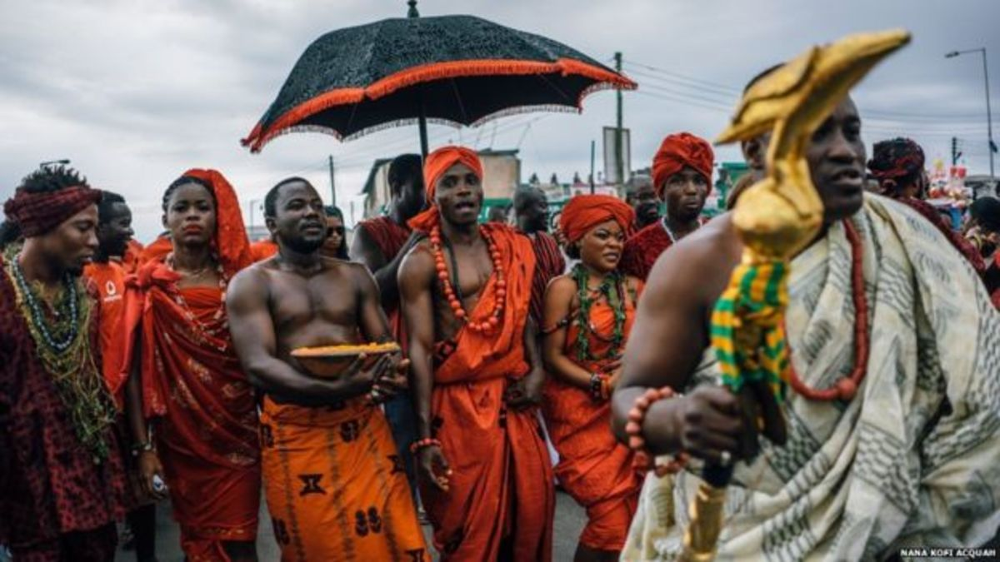

Welcome to Discover Ghana Culture
Explore the vibrant traditions, music, and history of Ghana.
Featured Festivals: Homowo Festival
The Homowo festival, celebrated by the Ga people, is a vibrant annual event. It translates to "hooting at hunger," commemorating a period of great famine in the history of the Ga state. The festival features traditional drumming, dancing, and a symbolic sprinkling of a special meal called *Kpokpoi*.